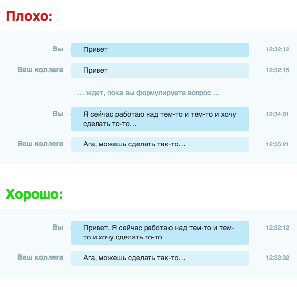

Будь-ласка, не питайте мета-питання в чаті!
мета-питання — це питання, які мають на меті ще питання, на приклад::
— «Зрозуміло, але що такого погонаго у цих питаннях та чому не потрібно їх задавати?»
— Вони забирають час! Як ваше, так и час інших людей, котрі намагаються Вам допомогти! Ви намагаетесь бути вічливим, не переходячи відразу до суті питання, як це роблять люди під час живої зустрічі. Але чат - це зовсім інше. Люди друкують повідомлення набагато повільніше ніж розмовляють. Замість прояву турботи, Ви змушуете людину чекати, поки формуеться ваше питання, що призводить до втрати продуктивності.
Теж саме відноситься й до цих повідомлень: «Доброго дня», «Здоров був. Ти тута?», «Є хвилинка?», «Пінг». ПРОСТО ЗАДАЙТЕ ПИТАННЯ )!
До того ж, коли Ви задаете відразу питання, відкриваются можливості асинхроної взаємодії. Якщо співбесідник недоступний, а Ви не дочекаєтесь як він повернеться, Він всеодно має можливість відповісти на питання, замість того, щоб дивитись на Ваш «Здоров був» та гадати, що може трапитись.
Відображення суті на зображені:
